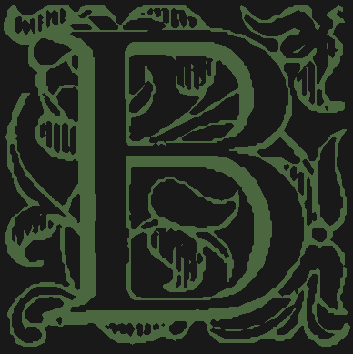
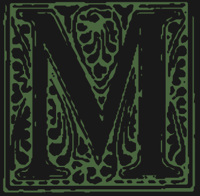
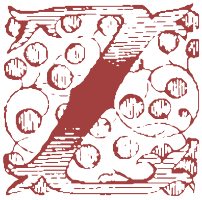

Iniciais ilustradas
Página de teste das letras capitulares, não listada na página inicial. Troque o tema no botão do canto superior direito para ver cada conjunto de letras.
B: nos dois temas

This second paragraph has no initial, so you can compare how the first one sits against ordinary text, with its indentation and justified lines running right up to the edge of the illustration.
M: só no tema escuro

The light theme shows the plain letter here, because there is no light drawing of this one.
Z: nos dois temas

Both the light and the dark drawings exist for this letter, so toggling the theme should cross-fade between them.
D, E e I: só no tema claro
Dark theme aside, these three are the drawings used on the real posts. They appear in the light theme and fall back to the plain letter in the dark one.
Every paragraph after a heading is a candidate for an initial, but only when its first letter has a drawing in the current theme.